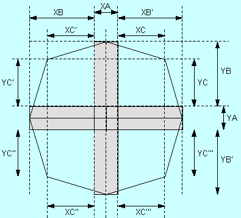

| XA | X axis center stop width (MAX) |
| XB | X axis left Count (MIN) |
| XB' | X axis right Count (MIN) |
| XC | X axis Count (MIN) with Joy Stick in up right direction |
| XC' | X axis Count (MIN) with Joy Stick in up left direction |
| XC'' | X axis Count (MIN) with Joy Stick in down left direction |
| XC''' | X axis Count (MIN) with Joy Stick in down right direction |
| YA | Y axis center stop width (MAX) |
| YB | Y axis up Count (MIN) |
| YB' | Y axis down Count (MIN) |
| YC | Y axis Count (MIN) with Joy Stick in up right direction |
| YC' | Y axis Count (MIN) with Joy Stick in up left direction |
| YC'' | Y axis Count (MIN) with Joy Stick in down left direction |
| YC''' | Y axis Count (MIN) with Joy Stick in down right direction |
|  |
Initial Values
| XA | MAX: 7 Count | |
| XBM | minimum guaranteed value of XB, XB' | MIN: 70 Count |
| XCM | minimum guaranteed value of XC, XC', XC'', XC''' | MIN: 54 Count |
| YA | MAX: 7 Count | |
| YBM | minimum guaranteed value of YB, YB' | MIN: 74 Count |
| YCM | minimum guaranteed value of YC, YC', YC'', YC''' | MIN: 56 Count |
Values after 500 direction changes
| XA | MAX: 7 Count | |
| XBM | minimum guaranteed value of XB, XB' | MIN: 68 Count |
| XCM | minimum guaranteed value of XC, XC', XC'', XC''' | MIN: 52 Count |
| YA | MAX: 7 Count | |
| YBM | minimum guaranteed value of YB, YB' | MIN: 70 Count |
| YCM | minimum guaranteed value of YC, YC', YC'', YC''' | MIN: 54 Count |
Given the above values, the program's actual range of use is as follows.
In other words, the program's center stop width may require adjustment in the application according to the nature of the game.